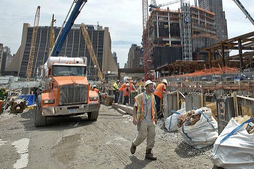

Hudson Yards is a massive redevelopment project, happening on the 28-acre parcel of land between 30th and 34th Streets and 10tn and 12th Avenues.
The idea of developing something useful in that area has a 70-year history. Throughout the second half of the XXth century several development plans had been offered to the city (and promptly rejected by it), the most memorable proposals formulated by William Zenkendorf in 1950s and Donald Trump in 1970s. The current project had been in the works over the course of the last decade and came to fruition as a result of several rounds of re-zoning of the area.
MTA (Metropolitan Transportation Authority) owns the land, and originally planned to sell it, but ended up offering it for lease to the best candidate in 2007. Several major developers offered their vision of the project, including such behemoths as Extell and Vornado (whose “rapper style” feud over many years is a stuff of legend within Manhattan real estate community), but in the end, it was The Related Companies, supported by the Oxford Properties Group, that secured the 99-year lease, and started developing Hudson Yard.
The project came an interesting challenge which Related has successfully solved: a large portion of the area is occupied by John D. Caemmerer Rail Yard – a fully operational train yard that belongs to Long Island Rail Road, which uses the yard to store, maintain and clean its trains in close proximity to Penn Station. To make the development possible, Related has committed to buiding a platform that will cover the entire yard – and constructing the entire new neighborhood on top of that platform.
The cost of this cool little project is $20 billion, and it has brought 23,000 new construction jobs to the city.
Kohn Pedersen Fox Associates created the master plan for Hudson Yards, which includes 16 skyscrapers with total capacity over 12.7 million square feet of new office, residential, and retail space. This will include 6 million square feet of office space, a 750,000 square feet retail, a cultural space, an Equinox-branded hotel (the first foray of this luxury gyms company into hotel business), a school for 750 children, 14 acres of public open space (gardens, playgrounds, a public square and three different parks), and over 5,000 new residential units. The entire complex is overlooking Hudson River.
The first of the sixteen buildings, 10 Hudson Yards (also designed by Kohn Pedersen Fox), has been completed, and it’s stunning. Coach, Inc., L’Oreal USA, European software company SAP, Boston Consulting Group and the advertising company VaynerMedia (one of the enterprises founded by the omni-talented wine connoisseur, social media marketer and real estate investor Gary Vaynerchuk), are among the tenants.